论文图表重构版
图片与图注分离；全部文字为黑色。查看三线表
question1/图1 交会定位
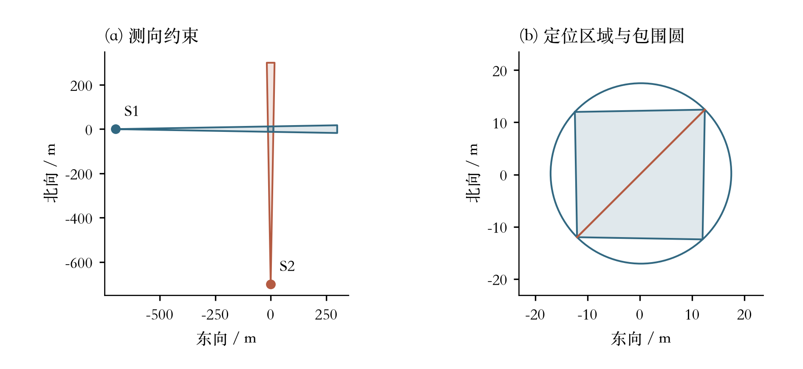
正交双点测向算例。检测点为(−700,0)、(0,−700)，误差半角为1°；右图放大左图原点附近的交集。区域直径D=34.57 m，最小包围圆半径R=17.28 m。红线为直径端点连线。question1/图2 算法流程
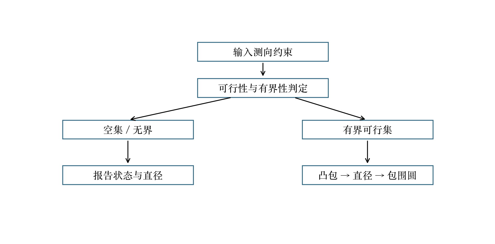
第一问求解流程。先判断空集和无界情形，再对有界交集计算凸包、直径及最小包围圆；点与线段按退化凸集处理，不使用人为包围框代替无界判定。question1/图3 三角形反例
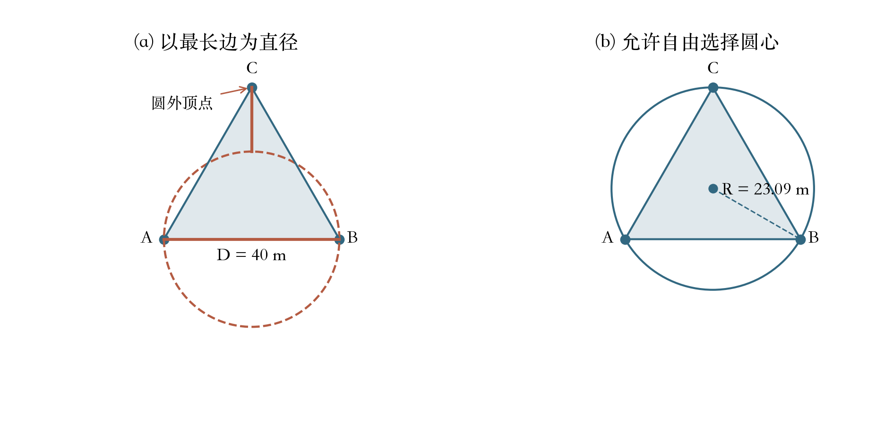
可由三组合法测向约束构造的正三角形定位区域。为便于标注，图形作了平移；边长及区域直径均为40 m，最小包围圆半径为40/√3≈23.09 m，大于D/2=20 m。question1/图4 两次测向反例
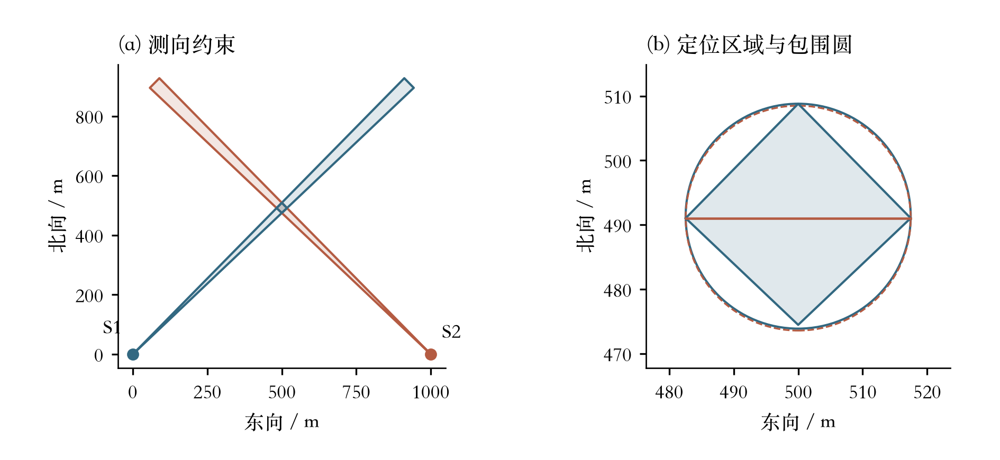
两次测向形成的四边形反例。蓝线为最小包围圆，红色虚线为以最长对角线为直径的圆；D=34.904813 m，R=17.455065 m，R−D/2=2.66 mm。两圆非常接近，覆盖失败以数值判据确认，不能仅靠视觉判断。question1/图5 递进定位
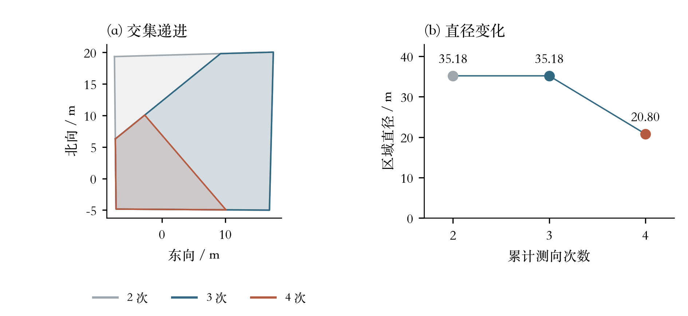
按同一算例依次加入第二、第三、第四次测向约束。新增观测可以缩小可行集，但不保证每次都严格减小直径；第三次观测后的直径保持不变。question1/图6 交会角敏感性
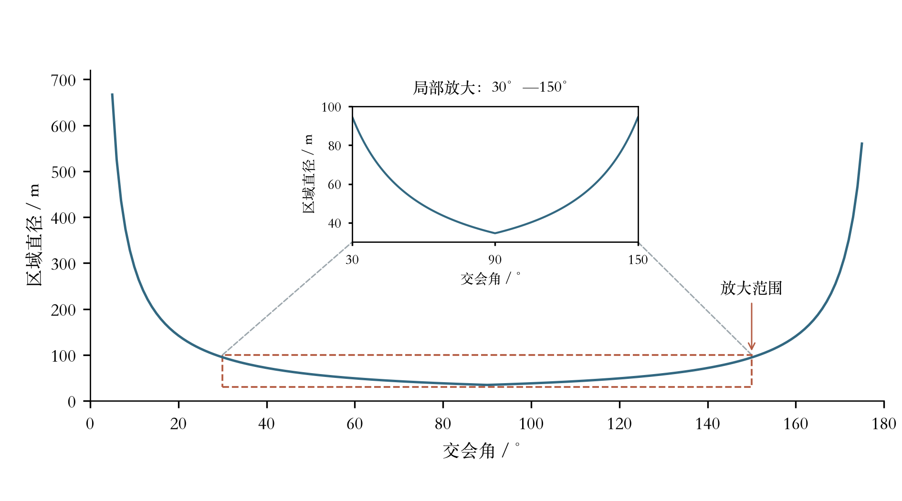
固定两检测点距目标均为700 m，真实读数误差为零，建模误差半角为1°。主图展示5°—175°范围的计算结果；砖红虚线框选出交会角30°—150°、区域直径30—100 m的局部，灰色虚线将该范围连接到上方放大图。放大图的横、纵坐标与主图含义及单位相同，仅改变显示尺度，并非另一组实验。局部图表明交会角接近90°时区域直径较小；该图为确定性几何实验。question2/图1 保证接收候选域
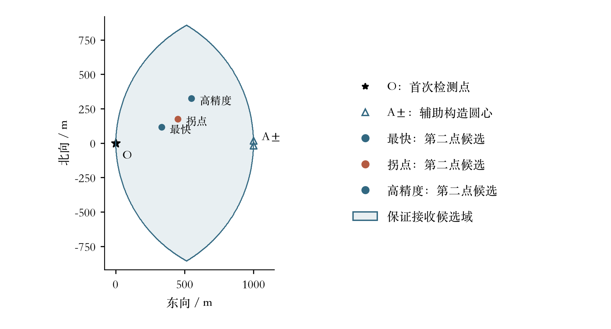
标准局部坐标下的保证接收候选域，由以O、A+、A−为圆心、半径999 m的三个圆盘交集构成；其中1 m为数值安全余量。A±相距约34.9 m，在本比例下接近。星号O为首次检测点，空心三角形A±为构造保证接收域的辅助圆心，不是信号源；三个实心圆点为第二次检测的代表候选位置，砖红点为拐点方案，浅蓝填充表示保证接收候选域。区域边界以网格显示，候选可行性仍由解析条件判定。question2/图2 时间与精度
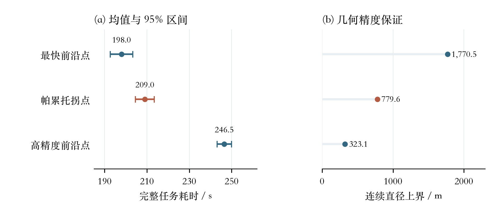
三种代表方案在同一批512个独立样本上的复评结果。左侧误差棒表示任务耗时均值的95%置信区间；右侧为连续定位直径的几何上界，不是统计区间。砖红色为帕累托拐点。question3/图1 覆盖与反馈机制
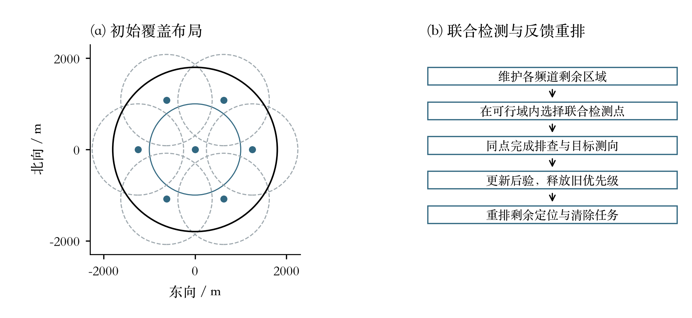
左图为正文指定的原点加六个外围站的初始覆盖布局，外围站半径1250 m、间隔60°，接收圆半径1000 m。右图表示联合检测与反馈重排的逻辑；本图是算法机制示意，不是实际行进轨迹，也不主张必须绕一圈。question3/图2 四十次运行结果
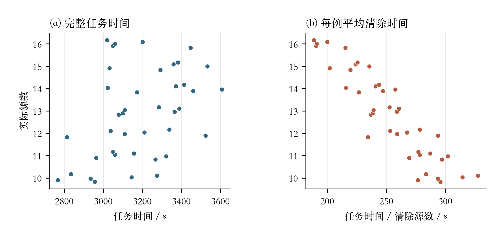
新增40次本地均匀场景运行，版本ede0b2c65ab649f3。每点为一次运行，同源数内纵向错开。40/40次全部完成，共清除515/515个源。平均任务时间3187.65 s，中位数3164.49 s；每例T/K的算术平均为252.47 s，全部时间除以全部清除数为247.58 s。该批仅包含联合重排策略，不能独立计算相对其他策略的提速。question3/图3 实际轨迹与反馈
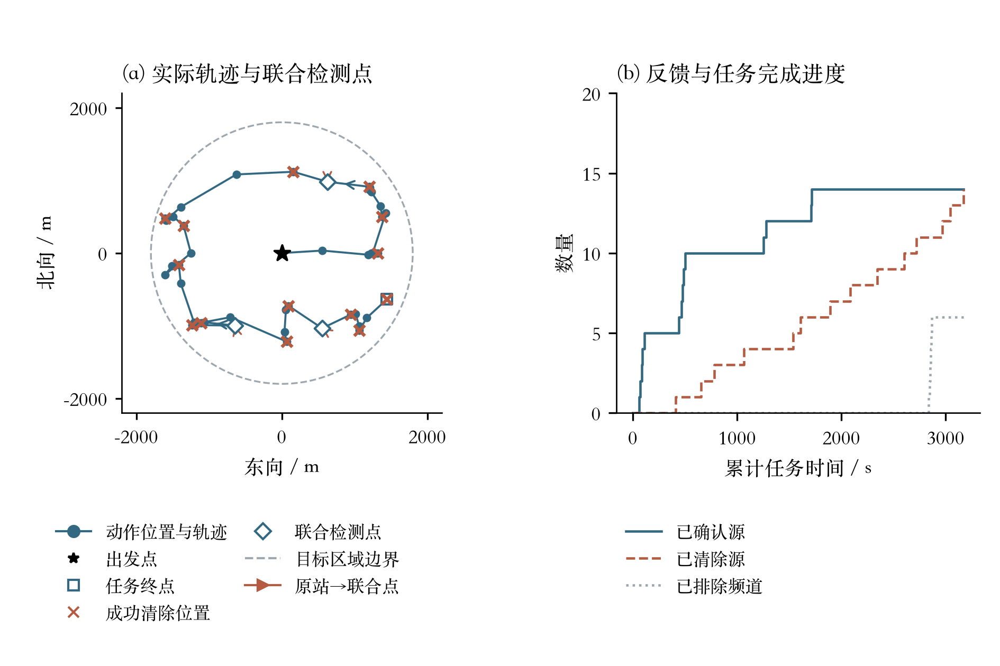
按任务时间距样本中位数最近的规则选择种子1200018，若并列取时间较短者，非择优展示。该例任务时间3172.30 s，清除14/14个源。左图蓝色圆点为动作执行位置、蓝线为行进轨迹（蓝色箭头表示行进方向），并非源的位置；砖红叉为成功清除位置，空心菱形为接受的联合检测点，砖红箭头从原站指向联合点；星号为出发点，空心方形为终点。右图按逐动作反馈画阶梯曲线，已排除频道数与已清除源数含义不同。question3/图4 平均耗时分解
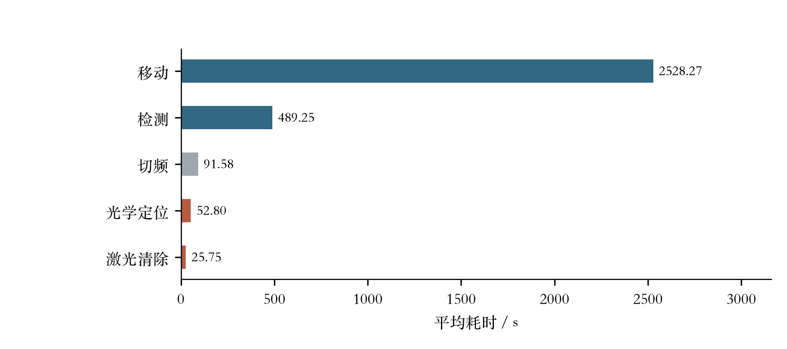
新增40次运行的平均任务耗时分解。光学定位时间包含失败尝试，激光清除仅按成功清除计时；五项未舍入均值之和等于3187.65 s。墙钟计算时间不属于题目任务时间，未混入本图。question4/图1 当前骨架
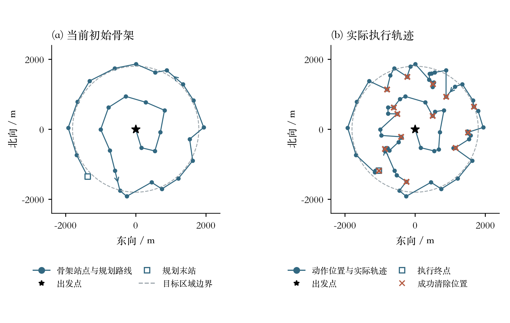
左图蓝色圆点为规划骨架站点、蓝线为预设访问路线；右图蓝色圆点为动作执行位置、蓝线为实际行进路线，蓝色箭头表示行进方向，这些圆点不是源位置。左：当前默认初始开放骨架，原点后29站，长17505.97 m。右：种子1480000动态方案逐动作位置连接得到的实际轨迹，行进22777.62 m，清除14/14个源，任务时间6466.52 s；砖红叉为成功清除位置。星号为起点，空心方形为终点，虚线圆为目标区域。右图来自开启几何层的配对记录；更新说明确认关闭该层后该批动作与任务时间保持一致。该例用于说明执行形态，性能结论使用完整配对样本。question4/图2 骨架优化主要收益
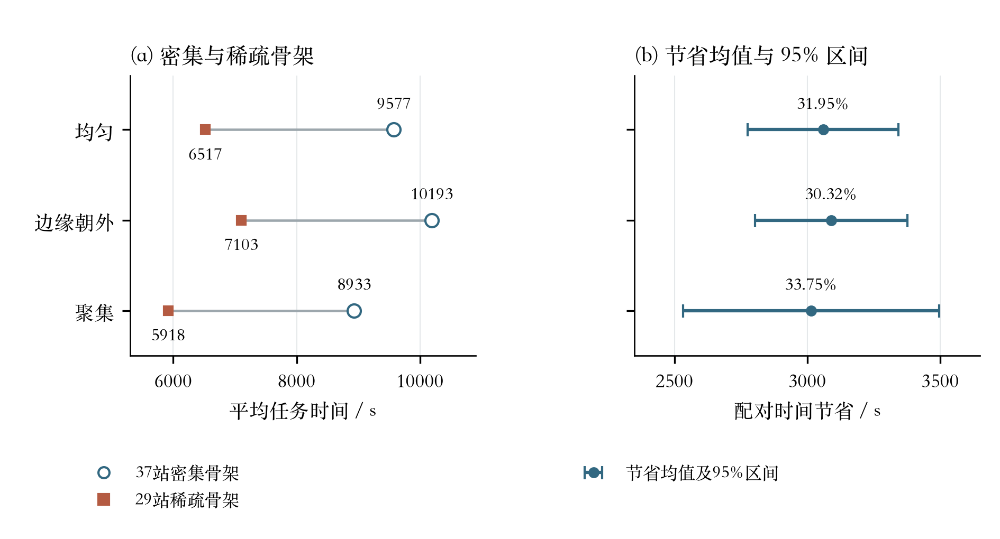
三类场景各14组配对。左图空心圆为37站密集骨架，砖红方点为29站稀疏骨架；右图为配对节省均值和数据汇总中的95%区间，上方标注相对平均总时间的节省比例。42/42组稀疏方案更快，两臂各清除546/546个源。该实验同时改变骨架和认证网格；稀疏臂早于当前动态层，不能当作当前方案对同一基线的完整累计收益。question4/图3 耗时分解
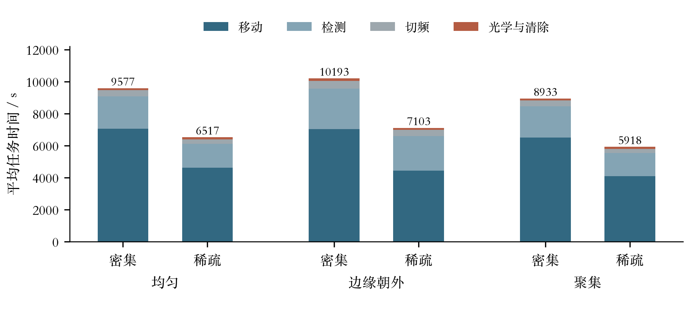
同一批三类场景骨架对照的平均耗时分解。各柱总高等于移动、检测、切频、光学定位及清除时间之和；小分量不在柱内堆叠标注，精确数值见配套表格。question4/图4 动态层增量收益
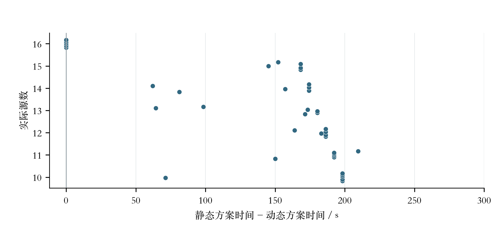
40个同种子配对的动态层增量收益，每点为一组配对，同源数内纵向错开以便辨认。平均6328.33→6183.91 s，节省144.42 s（2.28%），95%区间[123.03,165.81] s；35组更快，5组相同且均为16源。动态方案默认配置关闭几何层，更新说明记录该变化不改变这40组动作与任务时间。该批实验与图2的骨架对照不是同一批种子。